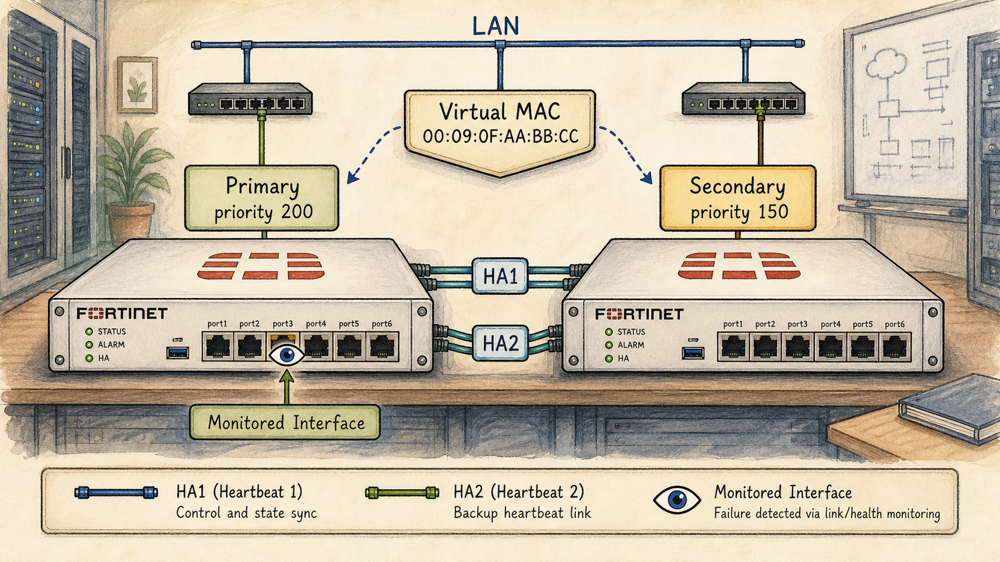

Where We Are in the NSE7 Journey

Two FortiGates side-by-side labelled 'Primary (priority 200)' and 'Secondary (priority 150)'.
FGCP is Fortinet's stateful cluster protocol. The primary handles all traffic; the secondary watches the heartbeat, ready to take over the moment the primary falls silent.
The Problem We're Solving Today
FGCP A-P is the default and most common HA mode. The exam expects deep familiarity with election, virtual MAC, monitored interfaces and failover triggers.
Key Concepts
- HA group-id, group-name and priority — and the election order
- Heartbeat interface selection and prioritisation
- Virtual MAC and gratuitous ARP at failover
- Monitored interfaces and their effect on election
- Override behaviour (preempt vs not)
Ready to Begin the Session
| Official NSE7 EF Blueprint Objectives |
|
| Prerequisites | Session 15: The HA Problem — Why One FortiGate Isn't Enough |
| Estimated Duration | 30 minutes |
| Phase | Phase 4 — High Availability: FGCP, FGSP, VRRP |
Session 16 — FGCP Fundamentals — Active-Passive Where we are in the NSE7 journey: FGCP is Fortinet's stateful cluster protocol. The primary handles all traffic; the secondary watches the heartbeat, ready to take over the moment the primary falls silent. The problem we're solving today: FGCP A-P is the default and most common HA mode. The exam expects deep familiarity with election, virtual MAC, monitored interfaces and failover triggers. Session goal: Configure FGCP A-P, force a failover, and walk through every step the secondary takes in the first 200 ms. Key concepts: • HA group-id, group-name and priority — and the election order • Heartbeat interface selection and prioritisation • Virtual MAC and gratuitous ARP at failover • Monitored interfaces and their effect on election • Override behaviour (preempt vs not)
What We Discovered Together
Parsed from the persistent session summary produced at the end of the Socratic investigation. Use it to rebuild context before a review or a lab.
Session Information
Session Number: 16
Topic: FGCP Fundamentals — Active-Passive (election, monitored interfaces, virtual MAC, heartbeat, failover sequence)
Date: July 2026
Certification: Fortinet NSE7 Enterprise Firewall 7.6
Blueprint Domain: 1.3 — Configure different operation modes for an HA cluster
Story Progress
Setting: Vaultline Financial, the week after Session 15.
Opening: Marcus ran the scheduled peak-load failover test (Session 15 cliffhanger) — clean pass, no drops, no retransmit storm. Verdict: cluster correctly sized. Priya signed off. That loop is CLOSED.
Incident 1 (Tuesday 10:14): Box A's WAN circuit to Clearing Partner 2 went dark (fibre, likely riser contractor). Box A healthy, heartbeat fine, NO failover. Root cause discovered by the student: the circuit was never on the monitored interface list — FGCP monitors nothing by default. Flagged to Priya as an action item: audit monitored list vs business-critical circuits.
Incident 2 (following week): Marcus added the circuit to monitoring on both boxes, then validated with a clean reboot of Box A (primary), override disabled. Box A returned ~40s later and RECLAIMED primary. Priya challenged: "override off = no preemption?" — resolved via the election waterfall + 5-minute uptime margin (fallthrough to priority).
Also introduced: Vaultline plans a second, smaller FGCP segmentation pair in the datacenter, same L2 segment as the HQ edge cluster — an engineer copying the HQ HA config as a template creates the group-id collision scenario (virtual MAC conflict). This second cluster is scoped but NOT yet deployed — future implementation task.
Characters: Priya (challenges drove both scenarios), Marcus (ran the test, found both incidents).
Outstanding / cliffhangers:
- Second datacenter FGCP pair pending deployment (must use a different group-id; also a vehicle for virtual clustering / VDOM partitioning, which connects to the still-unimplemented VDOM split from S02).
- Monitored-list audit action item for Priya.
- Meridian branch final cutover still pending (S15).
- Full re-quoted design still owed (S03).
- HA + routing (BGP graceful-restart at failover) and HA under FortiManager untouched — natural next threads.
Concepts Learned
1. Interface monitoring is OPT-IN (set monitor). FGCP watches nothing by default; only heartbeat is built in. Monitored-interface count is election criterion #1. Symmetric failure (same link down on both) = no failover, because moving primary fixes nothing. Monitoring everything invites flap-driven failovers — monitor only links whose failure warrants moving the role.
2. Election is a WATERFALL, stops at first decisive criterion. Override disabled (default): (1) most monitored interfaces up, (2) highest HA uptime with ≥5-minute lead, (3) highest priority, (4) highest serial. Override enabled: swaps #2 and #3.
3. HA uptime is its own clock (not system uptime). Resets to 0 on reboot OR monitored-interface failure. diagnose sys ha reset-uptime zeroes it deliberately (sanctioned manual failover with override off). diagnose sys ha dump-by vcluster shows uptime diff + reset_cnt.
4. The 5-minute margin trap: a SHORT outage lets the higher-priority box preempt immediately (uptime tie → fallthrough → priority); a LONG outage (>5 min) lets the survivor bank a decisive uptime lead and keep primary. Counter-intuitive — most guess it backwards.
5. Override swaps order, doesn't enable priority. Cost: a guaranteed second failover on every recovery, re-triggering the NP7 resync tax (S15). Override + priority are per-member, never synced. Manual failover: override on → change priority; override off → reset-uptime.
6. Virtual MAC = cluster property. All interfaces get one EXCEPT heartbeat and reserved management. New primary adopts the identical set; client ARP caches never change. GARP corrects switch MAC→port tables only. link-failed-signal: old primary drops all interfaces 1s to force stubborn switches to flush.
7. vMAC assignment methods (priority order): manual per-interface, automatic (U/L bit flip), default group-ID-based formula (inputs: group-id, vcluster ID, physical index; four logic tables; verify with diagnose hardware deviceinfo nic).
8. group-id does DOUBLE DUTY: membership credential AND vMAC formula input. group-name = credential only. Two clusters, same L2, same group-id, different group-name: do NOT merge (name mismatch blocks) but DO collide on vMACs — silent L2 identity fight, no HA alarm, looks like flaky switching.
9. Heartbeat = hello packets on EtherType 0x8890/0x8891 (config sync 0x8893); pure L2, needs shared broadcast domain. Defaults: hb-interval 200ms × hb-lost-threshold 20 ≈ 4s detection. backup-hbdev exists for split-brain protection. Heartbeat interfaces use explicit priorities (hbdev "p3" 10 "p4" 20, higher wins) — ORDERED/EXCLUSIVE list, never load-balanced; session-sync-dev IS load-balanced. Split-brain = both boxes claim primary + same vMACs on the wire + config divergence.
10. Dead-primary failover is NOT an election race: survivor self-checks its own monitored interfaces and declares unopposed — lower priority irrelevant with no living rival. Full sequence: silence → threshold expiry → self-check + declare → adopt vMACs → GARP → switches relearn → traffic → NP7 resync.
My Understanding
Strong:
- Predicted interface monitoring exists and correctly guessed it must be explicitly configured; independently justified the opt-in design (flapping risk).
- Derived the symmetric-failure no-failover outcome AND that interface health is communicated between members, before being told.
- Derived the uptime concept (name, reset-on-reboot, higher-wins) from hints in one pass; reasoned to "there must be a minimum time gap or anti-flap mechanism" unprompted — the 5-minute margin.
- Recalled the full 4-step waterfall cold at the capstone.
- Override answer to Priya was senior-grade: correct mechanics + flap risk + real-world recommendation (leave off, alert, investigate, act deliberately).
- Corrected own vMAC/GARP model mid-stream: after prompting on "who holds an ARP cache," cleanly separated client ARP (IP→MAC, unchanged) from switch MAC table (MAC→port, stale) and stated GARP's true job.
- Predicted group-id collision consequence ("same virtual MAC causing conflicts") and correctly guessed group-id feeds the vMAC.
- Asked an excellent original question (same group-id, different group-name, same L2) and had the framework to resolve it.
- Nailed split-brain from the no-backup-heartbeat scenario immediately.
- Capstone walkthrough: election order perfect, vMAC+GARP+switch-relearn steps precise.
Struggles / corrections:
- "Override off = no preemption" hole (shared with Priya) — resolved via the waterfall; the 40s-vs-5:01 clarifying question showed the intuition initially INVERTED, corrected explicitly.
- Guessed heartbeat frames were dot1Q (0x8100) — corrected to hello packets on 0x8890/0x8891. REINFORCE: 0x8100 vs 0x8890 are unrelated.
- Guessed hb-lost-threshold = 3 — actual default 20 × 200ms ≈ 4s.
- Initially assumed multiple heartbeat links would be load-balanced — corrected via the heartbeat-vs-session-sync job contrast (ordered/exclusive vs load-balanced); landed it cleanly.
- Briefly thought GARP unnecessary since vMAC already cached — the switch-table gap; self-corrected after one guiding question.
- At capstone, initially framed dead-primary takeover as running the comparison waterfall — corrected to survivor self-check, no race.
Troubleshooting Experience
Scenario A: dead WAN circuit, healthy box, no failover. Method: check HA config monitored list FIRST before assuming failover logic is broken. Lesson: "cluster healthy" ≠ "service healthy" — the cluster only knows what it's told to watch.
Scenario B: unexpected failback after reboot with override off. Method: check uptime diff (dump-by vcluster), apply the waterfall, identify the fallthrough. Lesson: election questions are answered by walking the ordered list, not by intuition about single settings.
Scenario C (design): two clusters, one L2 segment, copied HA config. Lesson: group-id collision = identical vMACs, no HA alarm, symptoms = intermittent flaky switching. Check group-ids first when two clusters share a segment.
Connections
Previous: S15 (protocol identities → this session is the FGCP A-P mechanics it promised; peak-load test cliffhanger resolved; NP7 resync tax reused twice — failback cost and failover step 6). S02 (VDOM/virtual-cluster hooks via vcluster ID in the vMAC formula). S39/40 (resync mechanism). Extras-01 CLI taxonomy (diagnose commands: reset-uptime, dump-by vcluster, sniff ether proto 0x8890, deviceinfo nic).
Future: FGCP A-A traffic flow (proxy-session distribution, the 0x8891 forwarding frames — glimpsed in study guide, not yet taught); virtual clustering / VDOM partitioning (deploys the second cluster thread + S02 VDOM debt); HA + BGP graceful-restart; HA under FortiManager; FGSP+VRRP combined designs (S15 spaced-rep item still pending).
Important Takeaways
1. FGCP monitors nothing by default. Monitored interfaces are opt-in, feed election criterion #1, and reset HA uptime on failure.
2. Election = waterfall, stops at first decisive criterion. Override off: interfaces → uptime(≥5min) → priority → serial. Override on: swap uptime↔priority.
3. Short outage → higher-priority box preempts via fallthrough. Long outage → survivor's uptime lead locks primary. Backwards from intuition.
4. Override buys a deterministic primary at the price of a guaranteed second failover + second NP7 resync per outage. Per-member, never synced.
5. Virtual MAC is cluster property; GARP fixes switch MAC tables, never client ARP. group-id feeds the vMAC formula — different group-id per cluster per L2 segment, non-negotiable.
6. Heartbeat: hellos on 0x8890/0x8891, ~4s default detection (20×200ms), ordered/exclusive hbdev priorities. Session-sync-dev load-balances; heartbeat never does.
7. A dead-silent primary triggers a self-check, not an election. The survivor's priority is irrelevant.
Future Session Notes
Reinforcement: (a) 0x8100 vs 0x8890 EtherType confusion — one quick re-test; (b) the 40s-vs-5:01 failback direction — re-quiz cold, intuition was initially inverted; (c) hb defaults (20 × 200ms ≈ 4s); (d) four vMAC logic tables covered at recognition level only — a worked bit-math example would deepen it; (e) FGCP A-A traffic flow untaught — Section 20 of study guide shows the 0x8891 SYN-forwarding flow.
Spaced repetition: in 1 session — cold-open: "override disabled, primary reboots, returns in 90 seconds — who is primary and which criterion decided?"; in 2 sessions — re-ask what GARP corrects and what group-id's two jobs are; in 3 sessions — full first-200ms walkthrough again from memory, including detection math; carry over from S15 (now due): scenario mixing FGSP + VRRP + an FGCP cluster as an FGSP peer.
Story: deploy the second datacenter FGCP pair (different group-id!) — vehicle for virtual clustering/VDOM partitioning and the S02 VDOM debt; Priya's monitored-list audit could surface a surprise; Meridian cutover and the S03 re-quote remain open; the S02 junior engineer could be the one who copied the HA config template.
Audio Podcast Prompt (For "The Packet Path")
Generate a two-host audio podcast script for "The Packet Path," a storytelling podcast for network engineers. Host: Alex, an experienced network security consultant. Co-host: Sam, smart and curious, asks clarifying questions. Tone: intelligent, conversational, true-crime documentary style. Episode title: "The Circuit Nobody Was Watching." Setting: Vaultline Financial, one week after their HA cluster passed a controlled peak-load failover test with flying colours.
Act 1 — The Silent Failure: Tuesday morning, a WAN circuit to a clearing partner goes dark. The firewall is healthy, heartbeat is perfect, the cluster does nothing. Marcus the NOC engineer asks the question of the episode: "is this a silent single point of failure?" Reveal: FGCP monitors NOTHING by default — interface health is opt-in, and this circuit was never on the list. Sam should press on why Fortinet made monitoring opt-in, leading Alex to the flapping argument: watch everything and every transient blip triggers a failover, each with a real resync cost.
Act 2 — The Reboot That Shouldn't Have Failed Back: Marcus adds monitoring, then reboot-tests the primary with override disabled. It returns in 40 seconds and takes primary back. Priya objects: "override off means no preemption!" Alex unpacks the election waterfall — monitored interfaces, then HA uptime (only decisive with a 5-minute-plus lead), then priority, then serial — stopping at the first clear winner. The twist Sam must voice: a SHORT outage lets the higher-priority box walk back in (uptime tie falls through to priority), while a LONG outage lets the survivor bank an unbeatable uptime lead. Backwards from everyone's intuition. Cover override honestly: it swaps uptime and priority, guaranteeing a second failover — and a second hardware-resync tax — on every recovery. The pro move: leave it off, alert, and use reset-uptime deliberately.
Act 3 — The Identity Handoff: the first seconds after a primary dies. Hello packets on a proprietary EtherType stop; twenty missed beats at 200 milliseconds ≈ 4 seconds; the survivor doesn't win an election — with no rival left, it self-checks and declares. Then the elegant part: virtual MAC addresses belong to the cluster, not the box, so client ARP caches never change; the gratuitous ARP exists purely to teach switches which PORT the identity now lives behind. Close with the horror story: two independent clusters on one L2 segment sharing a group-id compute identical virtual MACs — no alarm, just inexplicable flaky switching — because group-id is both a membership credential and an ingredient baked into the MAC itself. Alex's one-liner: "The cluster only protects what you told it to watch."
Guides, Bites & Nibbles
Additional resources sorted to this session — deeper guides, focused explainers, and quick-reference cards.